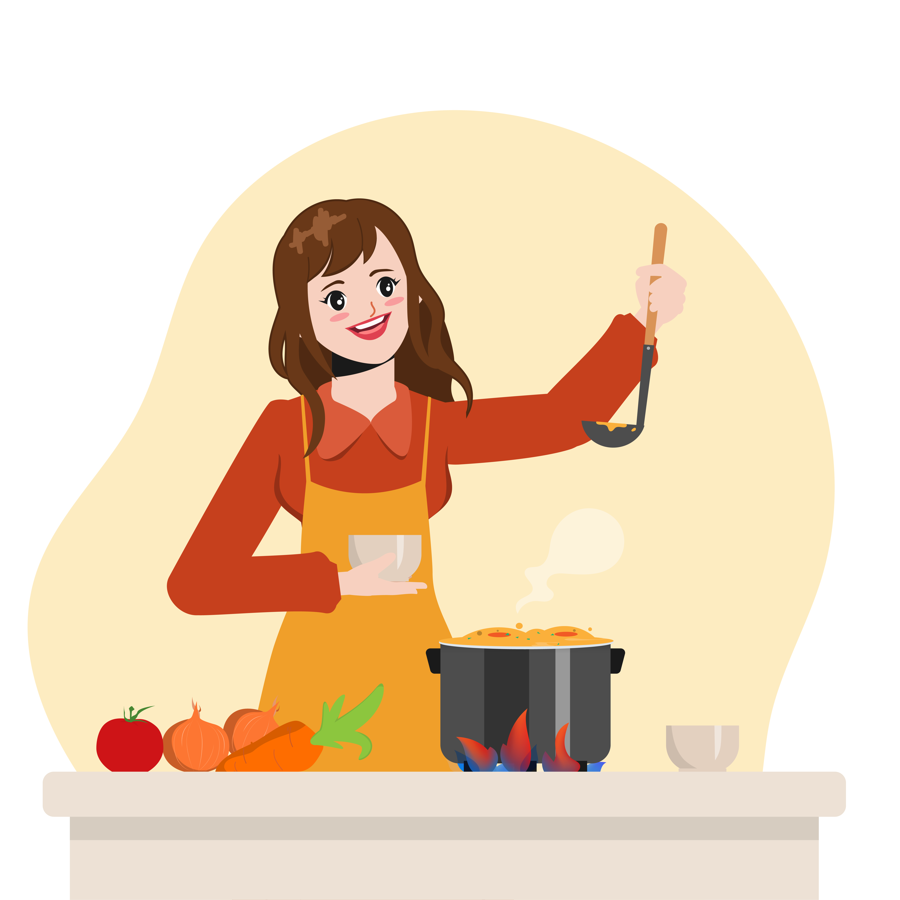

Cooking should feel simple, personal, and enjoyable—not complicated or overwhelming. We believe that everyone deserves to create meals they love using ingredients they already have, without the stress of searching through endless recipes that don't quite fit. Our platform is built to help you explore recipes in a smarter, more intuitive way. Instead of adapting yourself to a recipe, we let recipes adapt to you. Simply enter the ingredients available in your kitchen, and discover dishes that are tailored to what you can actually make. We also understand that every individual has unique preferences and needs. Whether you have allergies, dietary restrictions, or specific lifestyle choices, our filtering system allows you to customize your experience. Easily find recipes that match your preferences—avoiding what you can't eat and focusing on what you truly enjoy. From quick everyday meals to more creative dishes, we aim to make cooking more accessible and enjoyable for everyone. No more second-guessing ingredients or skipping recipes because they don't fit your needs. This is more than just a recipe platform—it's a space where your kitchen works for you. Explore confidently, cook effortlessly, and turn what you have into something amazing.
We strip away the complexity of traditional recipes, focusing on intuitive cooking that works for you.
Your kitchen, your rules. We adapt our suggestions based on what you actually have in your pantry.
Our mission is to turn every meal into a creative and stress-free experience for everyone.
Our platform is built to help you explore recipes in a smarter, more intuitive way. Instead of adapting yourself to a recipe, we let recipes adapt to you. Simply enter the ingredients available in your kitchen, and discover dishes that are tailored to what you can actually make.
Whether you have allergies, dietary restrictions, or specific lifestyle choices, our filtering system allows you to customize your experience. Easily find recipes that match your preferences—avoiding what you can't eat and focusing on what you truly enjoy.
